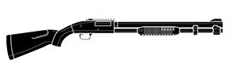

Kullanıcı Girişi:


Tom Clancy's Rainbow Six® Siege

Rainbow Six: Siege veya Rainbow 6: Siege Ubisoft Montreal tarafından geliştirilen ve Ubisoft tarafından yayımlanan Birinci şahıs nişancı türünde bir video oyunu. Oyun IGN tarafından E3 2014'ün en iyi oyunu seçilmiştir.

Oynanis
Tom Clancy's Rainbow Six Siege, oyuncuların bir anti-terörist birimi olan Rainbow takımından değişik 'operatörler' olarak oynayabileceği Birinci şahıs nişancı türünde bir video oyunudur. Bu operatörlerin değişik uyrukları, ekipmanları, yetenekleri ve işlevleri vardır. Örneğin Twitch adındaki bir operatör düşmanları uzak mesafeden elektrik şoku ile vurabilen bir drone'a sahip olacakken, Smoke, etkilenen bölgelerde bulunan düşmanlara büyük miktarda hasar verebilen zehirli gazlar yerleştirip patlatabilecek. Sonuç olarak, oyun bizlere 'asimetrik' bir yapı sunacak.Aynı zamanda her iki taraf da, ekipmanları ve aletleri oyuncu tarafından haritaya ve oyun moduna göre özelleştirilebilen, "Çaylak" isimli bir sınıfa sahiptirler.[4] Oyuncu her oyunda sadece bir çeşit operatör olarak oynayabilecek ve bu oyun bitene kadar operatörünü değiştiremeyecek. Sayıları sınırlı olmakla beraber, el bombası veya hücum patlayıcıları gibi güçlü silahlar da satın alınıp kullanılabilecek. Oyunda takım çalışması kuşatma anlamına gelen "Siege" ismiyle desteklenirken, oyuncuların düşmanlarını yenebilmesi için güçlerini birleştirmeleri amaçlanmıştır. Aynı zamanda oyuncular arasındaki iletişimi güçlendirmek için oyun içinde sesli olarak iletişim sağlanabilecektir. Oyuncular aynı zamanda oyun başlamadan önce saldırılarının veya savunmalarının ne şekilde olacağıyla ilgili plan yapabilecekler. Saldırı takımı çevreyi araştırmak, düşmanlarının ve hedeflerin yerlerini tespit edebilmek için küçük dronelar gönderebilecek iken, savunma takımı da saldırıyı önleyebilmek için kapı, duvar gibi yapıları güçlendirmek amacıyla çeşitli barikatlar döşeyebilecekler. Saldırı takımı, saldırı için birden fazla başlama noktasından birini seçebilecek. Oyundaki haritalar çok büyük olmayacak ve oyuncular öldükleri zaman bir takım arkadaşı tarafından gerçekleştirilmedikçe oyun bitimine kadar yeniden hayata gelemeyecekler. Bunun sebebinin, Ubisoft Montreal tarafından "üç ana sütun" olarak adlandırılan, oyuncuları takım oyununa ve değişik taktikler kullanmaya itmek ve aynı zamanda oyun süresince gerçek bir heyecan yaratmak olduğu açıklanmıştır. Aynı zamanda bir oyuna ayrılan süre de çok uzun değildir. Oyunun haritalarının hazırlanmasında 'düşeylik' anahtar ögelerden biri olarak açıklanmıştır. Oyuncular düşmanlarını tuzağa düşürmek için pencerelerden iple içeriye dalma gibi, zeminden ve çatıdan hücum patlayıcıları ve bazı özel silahlar ile saldırı yapabiliyorlar. Takım arkadaşını kasten vurmak dışında oyunda gerçekleştirilen her hareket, "Renown" isimli, yeni operatörler, silahlar ve ekipmanlar almaya yarayan puanlar kazandıracak.
Imha Ekipmanlari
Dünyanın dört yanından üst seviye eğitimli Özel Kuvvet operatörleri arasından ekibini oluştur. Düşman hareketlerini izlemek için son teknolojiden faydalan. Duvarları havaya uçurarak yeni ateş hatları aç, zemin ve tavanları delerek sızma noktaları aç. Elindeki müthiş envanterden her türlü silah ve cihazı kullanarak düşmanın yerini tespit et, çeşitli manevralarla yanılt ve onları çevrelerindeki her şeyle birlikte yok et.


Gelisim
Rainbow Six Siege zaman içinde geliştikçe ortaya çıkan yeni strateji ve taktikleri deneyimle. Yeni operatörler, silahlar, cihazlar ve haritalarla gelen her güncelleme ile savaş tarzını da geliştir. Sürekli değişen ortama paralel olarak arkadaşlarınla birlikte sen de kendini değiştir, en deneyimli ve ölümcül operatör sen ol.
Operatör
-
Sledge
Thatcher
Ash
Thermite
Twitch
-
Smoke
Mute
Castle
Pulse
Doc
Rook
Smoke
M590A1
SMG-11

BIOGRAPHY “Sure, I care about the environment. Immediately around me, anyway.” Though Porter wasn’t an exceptional student, aptitude tests revealed his propensity for sciences. Encouraged by faculty and his parents, he was able to follow a more unorthodox manner of education with tutors, home-schooling, and field science. He flourished in this break from formal classroom studies and quickly developed his skills in chemistry, biology, and math. Uninterested in pursuing a formal university education, Porter forged a fake ID and enlisted in the British Army. Though the rigidity of army rules wasn’t always a good fit, it was offset by the diverse range of training and experiences army life gave him. While he has been reprimanded for breaking rules, his superiors quickly recognized both his innovation and strategic perspective. He was then encouraged to join the SAS. Porter prefers to acquire knowledge and skills, such as language and music, in his own way and does not excel in a formal training capacity.
Jaeger


416-C_Carbine
P12

“Birthdays. Proposals. These should be surprises. No one wants a grenade to the face.” Raised by his uncle, a mechanic with the Bundespolizei (BPOL) Aviation Group, Streicher was around engines and motors at an early age. While he demonstrated skills in mechanics, it didn’t hold the challenge that he was looking for. Since he had an affinity for complex machinery, his uncle encouraged him to study aeronautical engineering at university, but strict academic form was an uncomfortable fit for him. So while Streicher’s grades were acceptable, he had a tendency toward restless antics. Following his hobby and passion in flying, he spent considerable time around pilots and aircraft. Private corporations sought him out, but Streicher joined BPOL-Aviation Group because it offered him unique challenges, the opportunity to fly and to serve his country. Almost immediately, Streicher began designing defensive weapon systems for BPOL including a ground-based Active Defense System (ADS) prototype. It was this prototype that caught the attention of GSG 9 and Rainbow.
Harita
Clubhouse
CLUBHOUSE Location: HANOVER, GERMANY Released: Base game (December 2015) Playlists: Standard, Quick Match, Ranked Map reworked: Small rework - September 2021 This map depicts an assault on a biker gang clubhouse. Featuring a full bar, gaming tables and leather furniture, this mixed interior/exterior layout offers a host of interesting tactical possibilities for both attacker and defender.
Basement
Ground
2nd Floor

Roof

K/D Oran Hesaplama
Proje sitemi ziyaret ettiğin için teşekküler!